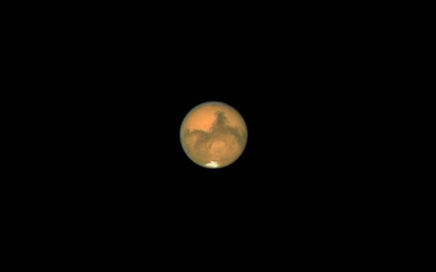
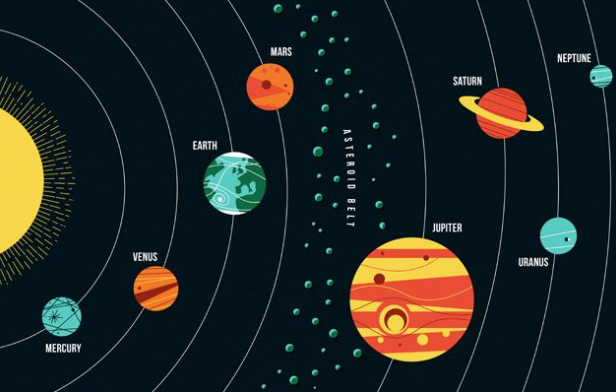
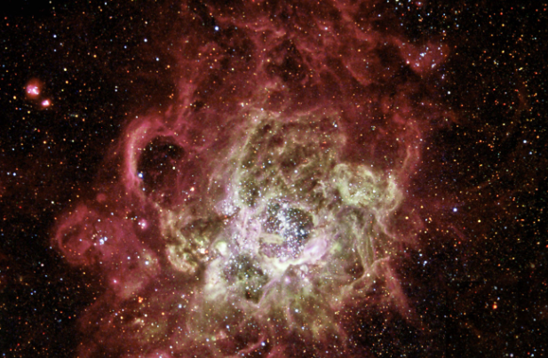

1) One million Earths could fit inside the Sun – and the Sun is considered an average-size star.
2)For years it was believed that Earth was the only planet in our solar system with liquid water. More recently, NASA revealed its strongest evidence yet that there is intermittent running water on Mars, too!

3)Comets are leftovers from the creation of our solar system about 4.5 billion years ago – they consist of sand, ice and carbon dioxide.
4)You wouldn’t be able to walk on Jupiter, Saturn, Uranus or Neptune because they have no solid surface!

5)If you could fly a plane to Pluto, the trip would take more than 800 years!
6)Space junk is any human-made object orbiting Earth that no longer serves a useful purpose. Scientists estimate there are about 500,000 pieces of space junk today, including fragments from rockets and satellites, and everyday items like spanners dropped during construction of the International Space Station!
7)An asteroid about the size of a car enters Earth’s atmosphere roughly once a year – but it burns up before it reaches us. Phew!
8)The highest mountain known to man is on an asteroid called Vesta. Measuring a whopping 22km in height, it is three times as tall as Mount Everest!

9)There are more stars in the universe than grains of sand on all the beaches on Earth. That’s at least a billion trillion!
10)The sunset on Mars appears blue.And now, it’s time for the lowdown on the planets of our solar system to one seriously sick beat! Just a word of warning – you might end up singing the song in your head all day!